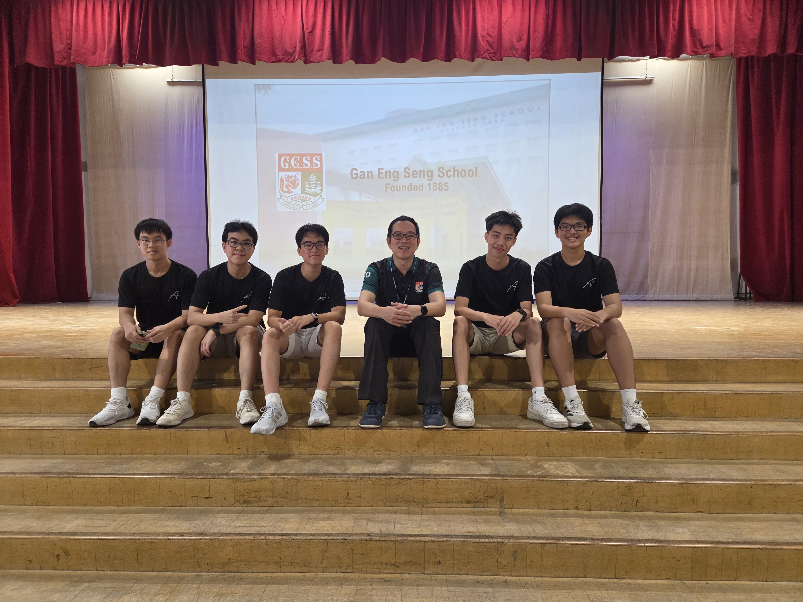
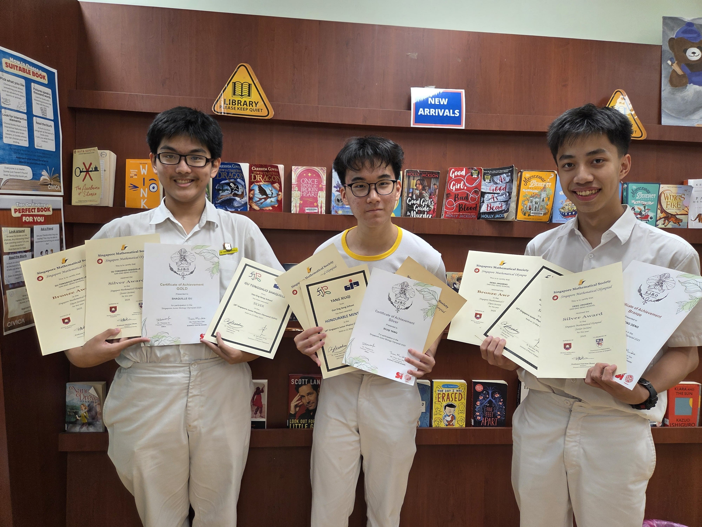

🔬
🧪
⚛️

School-based Academic Achievements
- Top in Cohort by Average % 2025 (85%prelims, 83%overall)
- (Subject prizes tentative for 2025)
- Edusave Scholarship 2025
- Top in Cohort 2024 — Mathematics
- Top in Cohort 2024 — Biology
- Edusave Scholarship 2024
Olympiad (and Similar) Achievements
- Singapore Junior Biology Olympiad 2025 — Gold
- Singapore Junior Physics Olympiad 2025 — Silver
- Singapore Mathematics Olympiad (Senior) 2025 — Silver
- Singapore Junior Chemistry Olympiad 2025 — Bronze
- Singapore Mathematics Olympiad (Open) 2025 — Bronze
- Singapore STEM Olympiad 2025 — Silver
- Astro Showdown 2025 — Tentative
- Singapore Mathematics Olympiad (Senior) 2024 — Bronze
- Singapore Physics League 2024 — Honourable Mention
- ICAS 2023 — Distinction
Applied Science Competitions
- Science Buskers 2024 — Judges' Choice Award & Best Dressed
- GreenWave Environmental Care Competition 2023 (Seatrium) — 2nd Place & Team Award
- Youth STEM Empowerment Programme 2024 — Questa Gold
- BuildingBloCS December Hackathon 2025 — Most Quirky Award
- IDE Maker 2023 — Design Award
- Young Catalyst Microbit Competition 2022 — Overall Winner
GCE 'O' Level Results
- English —
- Chinese — A1
- Elective Geography/SS —
- Mathematics —
- Additional Mathematics —
- Chemistry —
- Physics —
- Biology —
Photos


See more of my GESS Journey at: